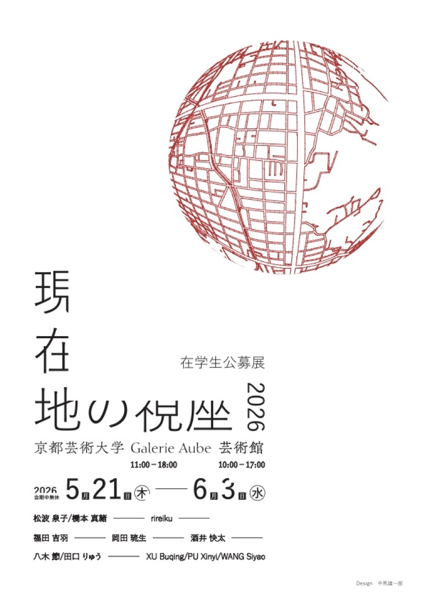

COLLECTION — 01
活動アーカイブ
サイト
プロジェクトの記録05 PROJECTS
粘土のヘッドホン
PROJECT 0101 — 02
粘土のヘッドホン
（ここに言葉）
1 / 2
布を包む
PROJECT 0203 — 04
布を包む手
（ここに言葉）
1 / 2
木の構造体
PROJECT 0305
木の構造体
（ここに言葉）
1 / 1
展覧会の記録
PROJECT 04
06 — 08
展覧会のポスター
（ここに言葉）
1 / 3
石と果実
PROJECT 0509
石と果実
（ここに言葉）
1 / 1